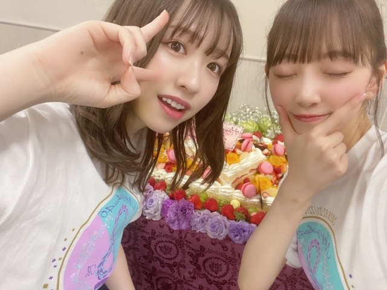

2020/0225Tue今夜放送
本日25:45〜フジテレビにて
乃木坂シネマズ〜STORY of 46〜第6話「納品ウォーズ」
放送です！！！
念願のアクション。たくさん練習して挑みました！
アクションでバキバキ動いてるイメージが無いと思いますが陸上部だったので結構動き回るの好きです。笑
是非見てください✨✨
スカッとしますよ〜

そして、8th year バースデーライブ4日間無事完走しました！



そして3月7日の2期生ライブに向けて切り替えてまた頑張ります✨✨

ドラマの感想お待ちしています！
いろんな役もっとできるようにがんばらなきゃ。
ではでは
2020/02/25 15:42
コメント(371)
未央奈！！
ブログ更新ありがとう
バスラお疲れ様！
一日目も千秋楽も最高笑笑
乃木坂シネマズ見るね？
ブログ更新ありがとう
バスラお疲れ様！
一日目も千秋楽も最高笑笑
乃木坂シネマズ見るね？
堀ちゃんの夢 アクション女優デビュー作、納品ウォーズ‼ 本当にカッコ良い堀ちゃんが観れます 目指せ和製ミラ ジョボビッチ‼(*￣∇￣)ノ次回作も是非アクションドラマでお願いします(^^)v
目指せ和製ミラ ジョボビッチ‼(*￣∇￣)ノ次回作も是非アクションドラマでお願いします(^^)v
好き。
バスラ・・・最高でした！！
乃木坂の日２月２２日に行ったよー！
最後のアンコールで堀ちゃんからレスもらえました。
すごく幸せな時間でした。ありがとーーー
乃木坂の日２月２２日に行ったよー！
最後のアンコールで堀ちゃんからレスもらえました。
すごく幸せな時間でした。ありがとーーー
四日間お疲れさまでした。
どんな感じだったかは想像しかできませんが、元気に楽しめたなら何よりです。
o(^-^)o
残念なことに、こちらでは放送が‥‥無いんです。
(T-T)
どんな感じだったかは想像しかできませんが、元気に楽しめたなら何よりです。
o(^-^)o
残念なことに、こちらでは放送が‥‥無いんです。
(T-T)
バスラで未央奈に会えて嬉しかった
大好き！
応援してます！
応援してます！
バスラお疲れ様です。
初日、最終日、現場で見させてもらいました。
freeアンドeasyの煽りから始まって、未央奈を好きになるきっかけになった、別れ際もっと好きになる、生で見れて最高でした。あらかじめ語られるロマンスもコール出来て良かったです。2019年も未央奈に楽しませて貰って、2020年も楽しませてもらってます。ますますの活躍期待してます。
初日、最終日、現場で見させてもらいました。
freeアンドeasyの煽りから始まって、未央奈を好きになるきっかけになった、別れ際もっと好きになる、生で見れて最高でした。あらかじめ語られるロマンスもコール出来て良かったです。2019年も未央奈に楽しませて貰って、2020年も楽しませてもらってます。ますますの活躍期待してます。
改めてライブお疲れ様でした！
次はもう2期生ライブなんだね。大会と被って行けないけど、頑張ってください！応援してます！
次はもう2期生ライブなんだね。大会と被って行けないけど、頑張ってください！応援してます！
未央奈ちゃん!ライブお疲れ様です。今日の乃木坂シネマ楽しみです!
未央奈！
バスラ、お疲れ様でした〜。
俺は初日と2日目に行きました！
席はスタンドの後ろの方だったのでちょっと遠かったけどね。
ず〜っと未央奈を探してました。
もちろんペンラは白×橙で！
2期ライブも運良く当選しました！
楽しみだ〜。
納品ウォーズ、地上波で放送だね！
俺はまだ見られてないので楽しみです！
バスラ、お疲れ様でした〜。
俺は初日と2日目に行きました！
席はスタンドの後ろの方だったのでちょっと遠かったけどね。
ず〜っと未央奈を探してました。
もちろんペンラは白×橙で！
2期ライブも運良く当選しました！
楽しみだ〜。
納品ウォーズ、地上波で放送だね！
俺はまだ見られてないので楽しみです！
バースデーライブお疲れ様でした。
とても楽しかったです。
2期生ライブも頑張って下さい。
とても楽しかったです。
2期生ライブも頑張って下さい。
バースデーライブ4日間お疲れ様でした❗️
ナゴヤドームで開催してくれて本当に嬉しかったです。
スカウトマンとライブ神カッコよかったです
ナゴヤドームで開催してくれて本当に嬉しかったです。
スカウトマンとライブ神カッコよかったです
まじですき！
未央奈〜
バスラお疲れ様＾＾
ドラマ観るよー めっちゃ楽しみ！
バスラ楽しかった？
またライブ行けたらいいなー
コロナかかったらあかんで！
バスラお疲れ様＾＾
ドラマ観るよー めっちゃ楽しみ！
バスラ楽しかった？
またライブ行けたらいいなー
コロナかかったらあかんで！
やほう♡
納品ウォーズとっても楽しみです♪
アクションシーンとっても圧巻です！
再び観てスカッとしたいと思います☆
バースデーライブ大変お疲れ様でした！
数多くの楽曲で大活躍で誇らしいです✨
プリン会の写真とっても微笑ましいです！
間近に迫る2期生ライブも楽しみですね✌
アイドルでも女優でも頼もしい存在です☺
納品ウォーズとっても楽しみです♪
アクションシーンとっても圧巻です！
再び観てスカッとしたいと思います☆
バースデーライブ大変お疲れ様でした！
数多くの楽曲で大活躍で誇らしいです✨
プリン会の写真とっても微笑ましいです！
間近に迫る2期生ライブも楽しみですね✌
アイドルでも女優でも頼もしい存在です☺
未央奈ちゃんとの2ショット写真
みり愛ちゃんと絢音ちゃんでしたね。
間違えてすいません。
写真かわいいです
みり愛ちゃんと絢音ちゃんでしたね。
間違えてすいません。
写真かわいいです
ライブおつかれ様
バースデーライブお疲れ様でした！私はハダサマあたりからずっと乃木坂が好きでしたが、ライブは今回が初でした！(ビューイングのほうですが)
最終日に参加したのですが、もう1曲1曲すべてが素晴らしくて感動しました！そして、乃木坂って仲間愛強いなぁ〜未来は明るいなぁ〜って感じるほどでした！！これからもまだまだ上り坂な乃木坂46を全力で応援します！頑張ってください！
最終日に参加したのですが、もう1曲1曲すべてが素晴らしくて感動しました！そして、乃木坂って仲間愛強いなぁ〜未来は明るいなぁ〜って感じるほどでした！！これからもまだまだ上り坂な乃木坂46を全力で応援します！頑張ってください！
バスラお疲れ様！2期生ライブ行きたいな〜
乃木坂シネマズも楽しみにしてます！
乃木坂シネマズも楽しみにしてます！
4日間ライブお疲れ様でした！
一日目と2日目参戦しましたが最高でした！！
一日目と2日目参戦しましたが最高でした！！
バスラお疲れ様でした！
今夜の乃木坂シネマズ楽しみにしてます
今夜の乃木坂シネマズ楽しみにしてます
バズラお疲れ様✨
2期生ライブ楽しみだね♪
2期生ライブ楽しみだね♪
birthday liveお疲れ様ですm(_ _)m
僕は2日目に行きましたが、
すごく楽しかったです(*^^*)
僕は2日目に行きましたが、
すごく楽しかったです(*^^*)
未央奈お疲れ様！
ブログ更新ありがとう！
納品ウォーズ絶対見るね！！
バースデーライブ4日間おつかれさま！
2期ライブ行けたら行くよ！
2期ライブもがんばって！
ドラマの感想書くね！
これからも応援してる！
がんばれー！
ブログ更新ありがとう！
納品ウォーズ絶対見るね！！
バースデーライブ4日間おつかれさま！
2期ライブ行けたら行くよ！
2期ライブもがんばって！
ドラマの感想書くね！
これからも応援してる！
がんばれー！
未央奈ちゃんブログ更新ありがとう！
バスラ最高でした！
初めてバスラ参戦して3日目しか行けなかったけど本当に感動しました！
これからもずっと応援し続けます！
体調に気を付けて頑張ってください！
バスラ最高でした！
初めてバスラ参戦して3日目しか行けなかったけど本当に感動しました！
これからもずっと応援し続けます！
体調に気を付けて頑張ってください！
4日目ライブ見に行きました
みおなのことがもっと好きになりました
これからも応援しています
みおなのことがもっと好きになりました
これからも応援しています
25th「しあわせの保護色」おめでとうございます。
バスラお疲れ様でした!
day３,４に行かせてもらいました。
day3ストレートday4ポニーテール
超可愛かったよ!
初スカウトマン見れたし,めっちゃラッキーでした!!
2期Liveケガせずにがんばってね♡
day３,４に行かせてもらいました。
day3ストレートday4ポニーテール
超可愛かったよ!
初スカウトマン見れたし,めっちゃラッキーでした!!
2期Liveケガせずにがんばってね♡
未央奈ちゃんがバリバリのアクションをこなしたと噂のドラマですね！
こちらでは放送がないですが、いずれ円盤化された際に、観たいと思います。
バスラ、お疲れ様でした！
2期生ライブも、頑張ってくださいね♪☆
こちらでは放送がないですが、いずれ円盤化された際に、観たいと思います。
バスラ、お疲れ様でした！
2期生ライブも、頑張ってくださいね♪☆
未央奈～～～～～～～～～～～～～～～。
ゴルゴンゾーラァ～～～～～～。
乃木坂シネマズ〜STORY of 46〜第6話「納品ウォーズ」予約しました。後日、感想書くね。
楽しみです。
二期生ライブ行きたかったなぁ。ドラマにライブ大忙しですね。息抜きも大事だよ。
みおなん。
ゴルゴンゾーラァ～～～～～～。
乃木坂シネマズ〜STORY of 46〜第6話「納品ウォーズ」予約しました。後日、感想書くね。
楽しみです。
二期生ライブ行きたかったなぁ。ドラマにライブ大忙しですね。息抜きも大事だよ。
みおなん。
名前書いたかなー？って思ってもっかい書こうとしたけど、同じ内容とか覚えてなさすぎて無理だった（笑）
乃木坂8周年おめでとう！
未央奈とはほんと初期から沢山会えたら
話せたり素敵な時間沢山貰えて幸せだったなー。
まぁ、結果未央奈しか勝たんってなる自分が
いるから未央奈のこと好きなんだなーって思う。
これからも大好きだし未央奈しか推せないなー。
未央奈さん人気者だから沢山ファンがいるけど
わたしのことを忘れてないといいなー。。。
絶対会いに行くから
待っててください！！
未央奈のお団子いつかなー？(´･_･`)笑
乃木坂8周年おめでとう！
未央奈とはほんと初期から沢山会えたら
話せたり素敵な時間沢山貰えて幸せだったなー。
まぁ、結果未央奈しか勝たんってなる自分が
いるから未央奈のこと好きなんだなーって思う。
これからも大好きだし未央奈しか推せないなー。
未央奈さん人気者だから沢山ファンがいるけど
わたしのことを忘れてないといいなー。。。
絶対会いに行くから
待っててください！！
未央奈のお団子いつかなー？(´･_･`)笑
バスラめっちゃ楽しかったです
二期ライブも頑張れ～
二期ライブも頑張れ～
ワタボコリえもすぎて泣いた
名前書いたかなー？って思ってもっかい書こうとしたけど、同じ内容とか覚えてなさすぎて無理だった（笑）
乃木坂8周年おめでとう！
未央奈とはほんと初期から沢山会えたら
話せたり素敵な時間沢山貰えて幸せだったなー。
まぁ、結果未央奈しか勝たんってなる自分が
いるから未央奈のこと好きなんだなーって思う。
これからも大好きだし未央奈しか推せないなー。
未央奈さん人気者だから沢山ファンがいるけど
わたしのことを忘れてないといいなー。。。
絶対会いに行くから
待っててください！！
未央奈のお団子いつかなー？(´･_･`)笑
乃木坂8周年おめでとう！
未央奈とはほんと初期から沢山会えたら
話せたり素敵な時間沢山貰えて幸せだったなー。
まぁ、結果未央奈しか勝たんってなる自分が
いるから未央奈のこと好きなんだなーって思う。
これからも大好きだし未央奈しか推せないなー。
未央奈さん人気者だから沢山ファンがいるけど
わたしのことを忘れてないといいなー。。。
絶対会いに行くから
待っててください！！
未央奈のお団子いつかなー？(´･_･`)笑
みおな、あやね、みりあサイコー！
プリン会サイコー！
プリン会サイコー！
堀未央奈❤こんばんは❗４日間のライブご苦労様❗楽しかったかな？残念ながら長野県は、フジテレビの番組は、写らないよ(T_T)未央奈アクションしたんだね(^-^)v怪我してない？まだ撮影しているの？観てみたいな(T_T)DVD発売したら買うね(^-^)v３月に２期生だけでライブあるんだね(^_^)v頑張ってね(^o^)v今日も未央奈可愛い(*^_^*)愛してる ♥❤
未央奈ちゃん！
ブログ更新ありがとう！
バスラお疲れ様でしたね!
来週２期生ライブですね！
応援してるよ☺️☺️
ブログ更新ありがとう！
バスラお疲れ様でしたね!
来週２期生ライブですね！
応援してるよ☺️☺️
みおな、こんばんは。更新ありがとう！ 近況報告ありがとうございます。 バースデーライブお疲れ様でした。 2期生ライブ楽しみにしてます。体調崩さないように！ では、毎日みおなに良いこと沢山ありますように！ おやすみおな！！
みおなライブお疲れ様！！
２期生ライブめっちゃ楽しみにしてるね！！
がんばってね！！！！
体調には気をつけてね
２期生ライブめっちゃ楽しみにしてるね！！
がんばってね！！！！
体調には気をつけてね
未央奈、8thバスラ本当にお疲れさまでした！
200曲って本当にすごいよね！
へとへとだと思うけど、そんな姿を見せずに最高の笑顔を見せてくれてありがとう！
とにかく可愛すぎて、未央奈の参加曲の度に見惚れてた。
２期生ライブ、落選したけど一般で何とか頑張る！
200曲って本当にすごいよね！
へとへとだと思うけど、そんな姿を見せずに最高の笑顔を見せてくれてありがとう！
とにかく可愛すぎて、未央奈の参加曲の度に見惚れてた。
２期生ライブ、落選したけど一般で何とか頑張る！
未央奈ブログ更新ありがとう！！！
そしてバースデーライブお疲れ様！
今回初のライブビューイングしたよ！
セカンドスは笑っちゃったよ笑
可愛すぎるよ！！楽しかった！！
そしてバースデーライブお疲れ様！
今回初のライブビューイングしたよ！
セカンドスは笑っちゃったよ笑
可愛すぎるよ！！楽しかった！！
バスラほんとに楽しかった！！！
指さししてもらえて嬉しかったー！
また絶対逢いに行くね！！( ఠ͜ఠ )♡
指さししてもらえて嬉しかったー！
また絶対逢いに行くね！！( ఠ͜ఠ )♡
ライブお疲れ様ー
ゆっくり休んでねー
未央奈かわいいー
ゆっくり休んでねー
未央奈かわいいー
こんばんはお疲れさま☺
第一話からやけど、乃木坂シネマズ放送ないんよ～見たいと思っていて。
アクションかあ。
最近俳優さんもやけど女優さんもアクション格好いいよね☺
綾瀬はるかちゃんや真木よう子ちゃん、本田翼ちゃんなどなど✨
体育系の俺としても堀ちゃんのアクション見てみたいや！
最近なら乃木中であった、アクションちゃうけどレイちゃんがトランポリン凄い上手やったよね☺
関テレ再放送でも良いからないかな～？
バースデーライブお疲れさまでした。
楽しめたかな？
何より無事に何事もなく乗りきったみたいでホンマに良かったです☺
８年目誕生日おめでとうね。
次は3月7日の２期生ライブ、今こういう時やから無事に乗りきってほしいです☺
ではではまたね☺
体調には気をつけてね。
ほなね、堀ちゃん☺
無理なく頑張りや☺
第一話からやけど、乃木坂シネマズ放送ないんよ～見たいと思っていて。
アクションかあ。
最近俳優さんもやけど女優さんもアクション格好いいよね☺
綾瀬はるかちゃんや真木よう子ちゃん、本田翼ちゃんなどなど✨
体育系の俺としても堀ちゃんのアクション見てみたいや！
最近なら乃木中であった、アクションちゃうけどレイちゃんがトランポリン凄い上手やったよね☺
関テレ再放送でも良いからないかな～？
バースデーライブお疲れさまでした。
楽しめたかな？
何より無事に何事もなく乗りきったみたいでホンマに良かったです☺
８年目誕生日おめでとうね。
次は3月7日の２期生ライブ、今こういう時やから無事に乗りきってほしいです☺
ではではまたね☺
体調には気をつけてね。
ほなね、堀ちゃん☺
無理なく頑張りや☺
堀ちゃん、ブログ更新ありがとう〜
ライブお疲れ様でした！
チケット当たらなかったので寂しいですが、
堀ちゃんが無事乗り切れて良かったです！
ドラマ予約済みです！
何度も、何度も見ます！
2期生ライブ.チケット当たらなかった！
何とか追加公演出来ないですかねー
お願いします！
堀ちゃん、大好きだよー
ライブお疲れ様でした！
チケット当たらなかったので寂しいですが、
堀ちゃんが無事乗り切れて良かったです！
ドラマ予約済みです！
何度も、何度も見ます！
2期生ライブ.チケット当たらなかった！
何とか追加公演出来ないですかねー
お願いします！
堀ちゃん、大好きだよー
みおな～
バースデーライブお疲れ様でした。
4日目、アリーナ席から輝いてる姿を見届けました
フロートから俺の方に向かって手を振ってくれて、めっちゃうれしかった
ただ、あとから気付いたんやけど、俺に向かって手を振ってくれてたんじゃなくて、俺の後ろにあったでっかいカメラに手を振ってたんだということに 笑
でも、その時の目線が俺の方を向いてるように見えて、それだけでめっちゃ元気がでました！
ありがとう
これからも応援します
バースデーライブお疲れ様でした。
4日目、アリーナ席から輝いてる姿を見届けました
フロートから俺の方に向かって手を振ってくれて、めっちゃうれしかった
ただ、あとから気付いたんやけど、俺に向かって手を振ってくれてたんじゃなくて、俺の後ろにあったでっかいカメラに手を振ってたんだということに 笑
でも、その時の目線が俺の方を向いてるように見えて、それだけでめっちゃ元気がでました！
ありがとう
これからも応援します
みおたんきゃわたんm(__)m
ブログ更新&バースデーライブお疲れ様！
とっっっても良かったよー！
サンエト大好きやから聞いた時涙出ちゃった
サイリウムも沢山振ったけど気付いてくれたかな？
2期ラのチケット取れたから楽しみにしてるね！
とっっっても良かったよー！
サンエト大好きやから聞いた時涙出ちゃった
サイリウムも沢山振ったけど気付いてくれたかな？
2期ラのチケット取れたから楽しみにしてるね！


お団子してくれるかなー？って待ってるよー（笑）
乃木坂8周年おめでとう！！
わたしも未央奈と出会って今年で7年になるのかーって
しみじみする日が徐々に近づいてるなぁー。
なんだかんだ未央奈しか勝たんってなる自分ほんと
未央奈なんだなーって思うから
会える日まで待ってて欲しい(´･_･`)
覚えててくれたら更に嬉しいけどね？
未央奈さん人気者だから(´･_･`)
最初から未央奈を応援できて直接沢山会えて
レポ残してるの見てたらほんと色々あったなーって（笑）
未央奈はさおりに沢山幸せくれてたけど
わたしは未央奈になんか返せてたのかなー？って
急にふと思った。
二期のお見送りで初めて会話できて
ガルルで二期ペア握手で初めて握手して
しみじみ思い出してます（笑）